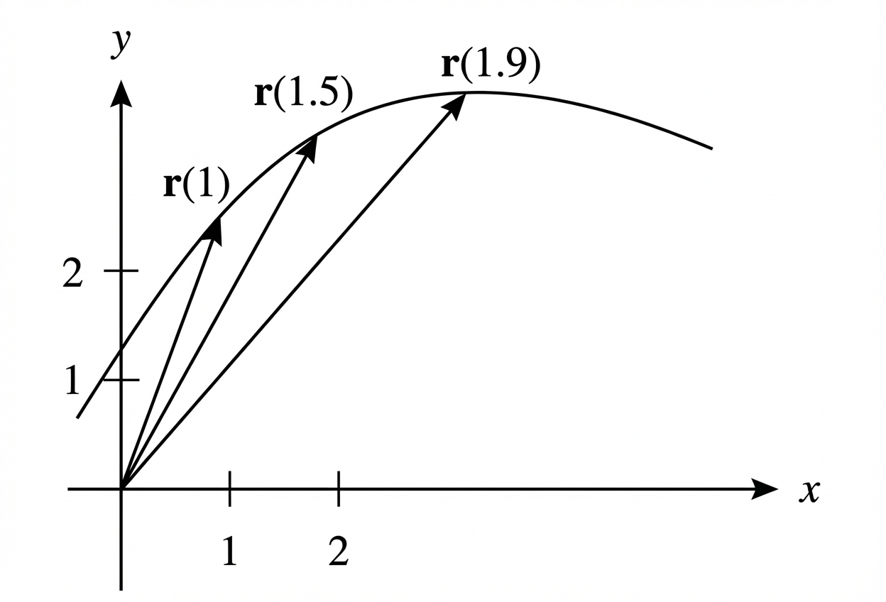

Homework Section 13.4
-
The picture below shows the path of an object. The object's location is given by the position vector function `bb(r)(t)`, where t is time.

- Sketch the average velocity vector from time `t = 1` to `t = 1.5`.
- Sketch the average velocity vector from time `t = 1.5` to `t = 1.9`.
- Write an expression for the velocity vector `bb(v)(1.5)`.
- Draw an approximation to the vector `bb(v)(1.5)` and estimate the speed of the particle at `t = 1.5`.
-
Let `bb(r)(t) = 2t bb(i) + (1 - t^2) bb(j)`
- Calculate the velocity, acceleration, and speed of an object with position function `bb(r)(t)`.
- Sketch the object's path and draw the velocity and acceleration vectors for `t = 2`. Place the tails of `bb(v)(2)` and `bb(a)(2)` on the tip of `bb(r)(2)`.
-
Calculate the velocity, acceleration, and speed of an object with the given position function.
- `bb(r)(t) = << 3t^2 , \ 1 + 2t , \ 4-t^3 >>`
- `bb(r)(t) = 2t bb(i) + cos t bb(j) - sin t bb(k)`
- Find the velocity and position functions corresponding to the acceleration function `bb(a)(t) = bb(j)` with initial conditions `bb(v)(0) = bb(i) + bb(k)` and `bb(r)(0) = bb(j) - bb(k)`.
- Find out when a particle reaches a minimum speed if its path is given by `bb(r)(t) = << 3t^2 , \ 2t , \ 4t^2-t >>` where t is in seconds and distance is measured in centimeters.
-
A projectile is fired with an initial speed of 400 meters per second and angle of elevation `60°`. For numbers 6 through 8, you may assume that the initial height is 0.
- Find the range of the projectile.
- Find the maximum height of the projectile.
- Find the speed of the projectile upon impact.
- A ball is thrown at an angle of `45°` to the ground. If the ball lands 70 meters away, what was the initial speed of the ball?
- A rifle has a muzzle velocity of 200 meters per second. Find two angles of elevation that can be used to hit a target 900 meters away.
-
Find the tangential and normal components of acceleration (use your work from number 4 on homework 13.3):
- `bb(r)(t) = 2t bb(i) + cos t bb(j) - sin t bb(k)`
- `bb(r)(t) = e^(-t) bb(i) + e^t bb(j) - tsqrt(2) bb(k)`
-
Consider the position function `bb(r)(t) = 2t bb(i) + t^3 bb(j)`. Do the following sketches on the same plane.
- Sketch the curve given by `bb(r)(t)`.
- Sketch the acceleration vector at `t = 1` (make sure its initial point is at `bb(r)(1)`).
- Sketch the vectors `a_T bb(T)(1)` and `a_N bb(N)(1)` (make sure the initial points are at `bb(r)(1)`).
-
Find the unit tangent, principal unit normal, and binormal vectors of `bb(r)(t) = (1)/(3)t^3 bb(i) - sqrt(2)/2 t^2 bb(j) - t bb(k)` at the point given by `t = 1`.
[Note: The unit binormal vector is defined as the ` bb(T) xx bb(N)`. Also, remember that the principal unit normal vector is given by `bb(N)(t) = (bb(T)'(t))/(||bb(T)'(t)||)`.]
Answers